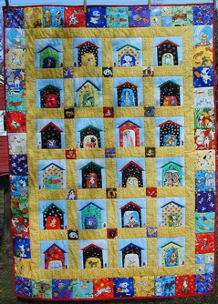
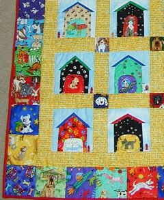
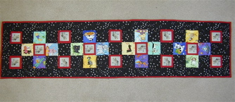
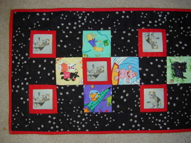
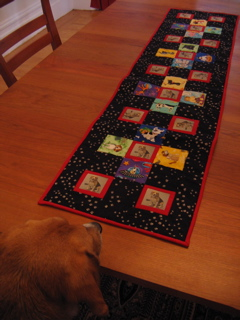

|

Daphne's quilt Daphne's quilt was great fun to make and when I am asked where I got all those dog fabrics people are surprised and laugh at my reply. Many came from a shop called The Quilted Cat on route 22 in Maiden Creek, Pa. Each dog house is a paw print fabric which came from my ever helpful problem solving friend Cappy. Dogs are always jumping up and so get paw prints on their houses, don't they? Some of the dogs are realistic and some are fun like surfer dog and space dog. The yellow sashing has all kinds of dog talk like fetch and woof and bow wow. |

Daphne's quilt detail |
|

Huxley and Friends Huxley and Friends became an idea when my son and daughter in law saw a quilt made for grand daughter Daphne who was born in the Chinese year of the dog. It is one of the afterthought runners that boosted the 12 to 14. Huxley walked with his owners, and was photographed with hearts, all over San Francisco as part of a heart walk fund raiser, chronicled on his web site. We downloaded his picture from that site and printed it on fabric. I then framed those in red to set them off and combined them with squares cut from leftovers from Daphne's quilt. This runner was a perfect example of why a quilter needs a good stash. After the squares were ready I needed a background and auditioned several fabrics "on loan" from a quilting friend. Of course the one we liked best was the smallest piece and not enough to do the job. Fortunately a web search found it on eBay so the project could be completed happily. |

Huxley and Friends detail |
|

Huxley admires his table runner |
|
All contents of this site (grannieanniedesigns.com) are copyright © 2007-2021 Anne Schweisguth. Publication rights may be requested by contacting me at "anne at grannieanniedesigns dot com". |
|